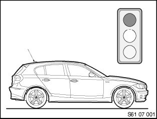
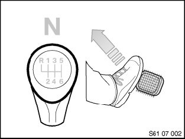
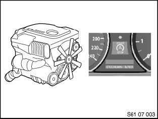
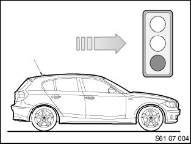
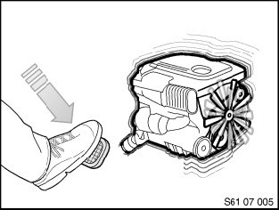
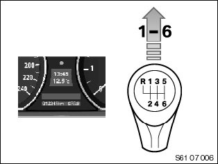
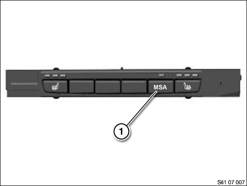
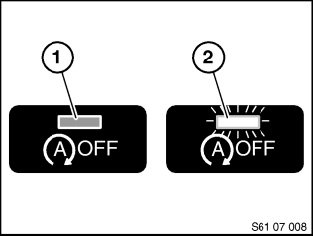
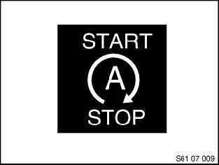
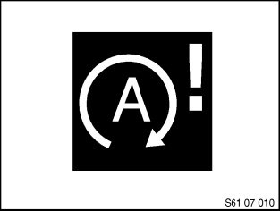

61 01 07 (335) Automatic Engine Start-Stop Function
61 01 07 (335) Automatic Engine Start-stop Function
Manual gearbox
Situation:
As a "BMW Efficient Dynamics" measure, the automatic engine start-stop function (development code: Automatic Engine Start-Stop = MSA) helps to reduce fuel consumption and CO2 emissions. The drive unit is switched off when the car halts e.g. at traffic lights, by engaging neutral and disengaging the clutch. To restart it, it is sufficient to operate the clutch pedal.
Vehicles concerned:
Phased-in as from March 2007 in manual gearbox vehicles.
NOTE: The automatic engine start-stop function is installed as standard on these vehicles.
Procedure:
Functional sequence ASSF (automatic engine start-stop function)
Engine shutdown

The driver brakes the vehicle to a standstill (e.g. at traffic lights).

The driver engages neutral and releases the clutch.

The engine cuts out automatically.
The "Start/Stop" symbol appears in the instrument panel (see Display concept ).
Engine start

The driver wishes to resume the journey.

The driver presses the clutch pedal.
The engine starts.

A gear can be engaged and the journey continued.
The "Start/Stop" symbol in the instrument panel goes out and the time and temperature appear (see "Display concept").
Prerequisites for an automatic engine shutdown
The automatic engine start-stop function will only stop or start the engine if certain conditions are met.
Engine shutdown
The engine is switched off when:
- The vehicle is stationary (speed < 3 kph).
- The vehicle has been driven at > 5 km/h since the engine was last stopped.
- The vehicle has been driven at 5 km/h since the last change at terminal 15.
- The manual gearbox is in neutral.
- The clutch pedal is not pressed and the steering wheel not turned (steering wheel must be aligned straight).
- The engine speed is virtually at idle speed.
Engine start (with action by the driver)
The engine can be restarted by the driver with the aid of the automatic engine start-stop function if the driver actively intervenes by pressing the clutch pedal down fully (or pressing the START STOP button).
Following this action by the driver, the engine will only start if the gearbox or transmission is in the neutral-position and the drive train is not engaged.
Engine start (without action by the driver)
Without active intervention by the driver it may be necessary for the engine to be started (See also "Switch-on prompts")
The engine starts without any action on the driver's part if:
- The vehicle starts to roll (forwards or reverse).
- The brake pressure falls below a defined threshold value.
- The battery charge falls below a particular threshold value.
- The condensation sensor detects condensation on the windscreen (IHKA).
- With the air conditioning compressor switched on, the evaporator temperature rises above a particular threshold value.
NOTE: The aforementioned criteria apply only to the automatic engine start-stop function, in other words, not if the engine has been switched off with the SST (START STOP button).
Switch-off inhibitors and switch-on prompts
Besides its main function of propelling the vehicle, the internal combustion engine has to provide other auxiliary functions.
These auxiliary functions are necessary for maintaining operating safety and convenience functions and complying with emissions requirements.
Certain conditions are therefore governed by switch-off inhibitors and switch-on prompts, either preventing the engine from being stopped or prompting its restarting.
NOTE: The customer should be alerted to possible switch-on prompts (engine starts without customer's intervention).
If for instance the evaporator temperature with the air conditioning is above a certain threshold value, this may serve as a switch-off inhibitor or switch-on prompt.
Switch-off inhibitors
The engine continues to run even though the gear lever is in the idle position and the clutch pedal has been fully released.
The following conditions act as switch-off inhibitors and prevent the engine from shutting down:
- Air conditioning requirements:
- Automatic air conditioning: MAX AC button pressed
- Automatic air conditioning: Defrost button pressed (request to defrost windscreen)
- Air conditioning system: high blower speed and low blower temperature, compressor button pressed
- Air conditioning system: high blower speed and air distribution directed to windscreen, compressor actuated
- Ambient temperature ≤ 3 °C and with air conditioning activated > 30 °C
- Engine coolant temperature below a particular value (depending on engine version approx. 20 - 50 °C)
- Carbon canister needs purging
- Engine speed > 900 rpm
- Battery condition:
- State of charge too low
- Measured battery state of charge not plausible
- Battery temperature too high (approx. 50 °C)
- Starting voltage drop from previous ASSF start too low
- Partial vacuum in brakes not low enough
- Steering wheel movements by the driver
- Vehicle rolling
Switch-on requesters
The switch-on prompt is regarded as an automatic engine start and depends on the following conditions:
- Battery condition - battery charge too low
- Air conditioning requirements - cooling
- Partial vacuum in brakes not low enough
- Vehicle starting to roll.
Special features of switch-off inhibiting and switch-on request
Battery condition and on-board power supply
The battery condition is a key factor influencing whether switch-off inhibiting and/or switch-on requests are set. The battery condition is calculated in the APM (Advanced Power Management). This function is integrated into the engine control (see energy management) and has been specifically extended for the automatic engine start-stop function.
The aim is to permit reliable starting of the combustion engine after a defined immobilization period, in terms of the on-board power supply. Before the combustion engine is switched off, a reliable prediction of the minimum usable, absolute residual capacity and the minimum voltage level in a subsequent hot start is made. The APM calculates the condition of the electrical on-board power supply based on the battery condition.
If the battery's charge condition drops into the red zone after the engine has been switched off by the automatic engine start-stop function, the automatic engine start-stop function starts the engine.
Air conditioning requirements (heating mode / air conditioning operation)
If the coolant temperature is well below the target outlet temperature (heating-up mode), this is treated as a switch-off inhibitor. In the heating mode, the electric auxiliary water pump (N47) and electric main water pump (N43) are activated upon an ASSF engine shutdown. This is prompted by the heating and air conditioning controls via the bus system.
In the event of an ASSF engine shutdown, climatic comfort may be reduced (formation humidity/odours) because the air conditioning compressor is not running and consequently delivers no cooling power.
If the evaporator temperature rises above a threshold value during the ASSF engine shutdown when the air conditioning is switched on, this is treated as a switch-on prompt and the engine starts automatically.
If the condensation sensor measures a value that suggests condensation, with the automatic air conditioning switched on, the automatic engine start-stop function is suppressed (switch-off inhibiting). If this occurs during an ASSF engine shutdown, a switch-on request is issued.
Insufficient braking pressure
To ensure that there is always sufficient braking effect (including when the engine is shut down), the partial vacuum in the brake servo must always be monitored. If necessary, the engine is started automatically as soon as the partial vacuum falls below 500 hPa during an ASSF engine stop.
Steering servo
The engine will not be switched off for as long as the steering wheel is being turned. Steering servo is always assured. Only when the automatic engine start-stop function ceases to identify any movement of the steering wheel via the steering column switch cluster can the engine be switched off. This information is provided via the bus system.
Safety requirements
- Protection against automatic engine starting while working in the engine compartment:
If the bonnet is opened, the automatic engine start-stop function is deactivated to prevent an automatic engine start while working in the engine compartment.
- Renewed starting is always possible via the start/stop button.
- The automatic engine start-stop function can be reactivated after the bonnet is closed and either the engine has been started or a speed of > 5 km/h has been reached.
- Protection if the vehicle is left
If the driver leaves the vehicle, the automatic engine start-stop function is deactivated to prevent the engine from starting automatically.
The driver's seat belt buckle is monitored to this end.
The automatic engine start-stop function is deactivated when the driver's seat belt buckle is released. An ASSF engine shutdown is only permitted again once it has been identified that the driver's seat belt buckle is fastened and either the engine has been restarted or a speed of > 5 km/h has been reached once (only switch-off inhibitor).
The status of the seat belt buckle switch is indicated by the safety system via the bus system.
IMPORTANT: Even if the seat belt is not fastened and the bonnet is open, the engine can still start if the vehicle's speed exceeds 5 km/h.
Protection when vehicle moving
An engine shutdown must never take place while the vehicle is moving. An engine shutdown is only possible at a speed of less than 3 km/h.
There is also a protective feature to prevent an automatic engine start with the power transmission engaged. If the drive train is engaged on a vehicle, an automatic engine start is prevented. The zero-position sensor in the transmission monitors whether or not power transmission has been interrupted.
System-related deactivation of the automatic engine start-stop function
The Auto Start Stop function may also be deactivated for system-based reasons (the engine remains off). This is indicated to the driver by a CC message in the dashboard when a start is requested. There may be the following reasons for system-based deactivation:
- Set belt buckle signal
- Engine compartment lid contact switch
- Engine emergency running
- Implausible sensor or bus signals when vehicle tow-started.
- Ignition key is no longer detected (Comfort Access).
NOTE:
- Engine running and key taken out of vehicle - no ASSF engine shutdown
- Engine in ASSF engine shutdown status and key taken out of vehicle - no ASSF engine start
The engine can only be started by the driver pressing the start/stop button.
Deactivation via a safety function
If the Auto Start Stop function is deactivated by a safety function during an ASSF engine stop, the engine can only be restarted via the start/stop button and from a speed of 5 km/h.
Deactivation by system fault (emergency-run concept)
If a fault is detected in the system network of the automatic engine start-stop function (signal inputs, bus signals etc.), a switch-off inhibitor is set or the automatic engine start-stop function deactivated.
Fault recognition while the engine is running thus prevents any subsequent engine stops by the automatic engine start-stop function. In the event of a fault recognition in an engine stopped by the automatic engine start-stop function, a distinction is made between the following instances.
1. If safety-relevant faults are identified (fault in zero-position sensor, brake vacuum sensor, clutch sensor, enable line, engine compartment lid contact switch or driver's seat belt buckle), the automatic engine start-stop function is deactivated immediately and an automatic ASSF engine start is no longer permitted.
2. If other faults DME/DDE emergency operation, etc.) that are not safety-critical are identified, the next ASSF engine start is still permitted. No further ASSF engine shutdowns are permitted.
3. The automatic engine start-stop function is disabled in the event of faulty bus communication with the DME/DDE engine control.
NOTE: If the automatic engine start-stop function is deactivated by a system fault, a CC message (ID397) is flashed up in the instrument panel (see display concept).
Deactivation by external factors
If the seat belt buckle or bonnet are opened during an ASSF engine stop, the automatic engine start-stop function is deactivated and an engine start is only possible with the Start/Stop button or from a speed of > 5 km/h. If the driver attempts to start the engine by pressing the clutch pedal, the CC message ID450 is flashed up after 1 to 2 seconds (see "Display concept").
Deactivation by ASSF button
NOTE:
The graphic shows the pushbutton (1) still showing the development code MSA (Automatic Engine Start-Stop).
For correct designation, see under "Pressing the ASSF button"

The automatic engine start-stop function can be deactivated manually with the ASSF button (1). The automatic engine start-stop function is activated with every terminal change (terminal 15 on) and with the engine stationary or if the ASSF button (1) is pressed repeatedly. The signal from the ASSF button (1) is read in by the IHKA and passed on to the engine control. The indicator light in the ASSF button (1) is actuated by the IHKA.

Pressing the ASSF button:
ASSF button not pressed (1) - LED off ASSF button pressed (2) (the automatic engine start-stop function can be deactivated at the customer's request) - LED on.
The automatic engine start-stop function is active each time the engine has been restarted.
Display concept
The following displays are used in conjunction with the automatic engine start-stop function:

If the engine can be started via the ASSF function, this status is indicated permanently in the instrument panel.
If the customer wishes to display the temperature and time, they can change over the display by pressing the BC roller.

If there is a fault in the ASSF hardware that causes the automatic engine start-stop function to be deactivated, a CC message is displayed.
Text of CC message:"Automatic Start/Stop failure" (ID397).
If the automatic engine start-stop function is deactivated in order to assure operational reliability ("seat belt buckle unfastened"), a further CC message is displayed as soon as there is a switch-on prompt.
Text of CC message:"Automatic Start/Stop failure" (ID450).
Notes for Service department
The automatic engine start-stop function will only operate under certain conditions.
The function includes an automatic feature that examines the safety and comfort-based conditions that govern an engine start or engine shutdown.
NOTE: In the event of customer queries, always check these conditions against the Checklist in Annex 1.
IMPORTANT:
If the engine compartment lid contact switch is over-extended (workshop mode), the information switch closed is given. The automatic engine start-stop function is active.
An automatic engine start is possible.
Terminal 15 is automatically switched off via the signal from the door contact by opening or closing the driver's door with ASSF deactivated (e.g. "seat belt unfastened") and the driving lights switched off.
Terminal 15 can be permanently switched on again by subsequently pressing the START-STOP button.
Perform this process before the vehicle programming or diagnosis.
The automatic engine start-stop function is dependent on information from the energy management. In the event of the battery being changed or after every flashing process, the reference data on the charge and quality status of the battery may be lost. They will only be available again after a teach-in period of approx. 6 hours (bus system must be in sleep mode). The automatic engine start-stop function cannot be activated during this teach-in phase for reasons of reliability.
Faults stored in the ASSF system fundamentally result in the automatic engine start-stop function being deactivated. Before renewing parts, always perform a functional check to exclude the possibility of a malfunctioning sensor.
After working on vehicles with the automatic engine start-stop function involving one of the following actions, the automatic engine start-stop function is switched off until the new standby current/battery parameters have been learned.
In the following instances, the customer's attention should be drawn to the delay until the next ASSF engine shutdown:
- After disconnecting the battery
- After programming the engine control (note exceptions).
Be sure to observe the safety precautions when working on vehicles with automatic engine start-stop function. Before performing work on the engine, always make sure that the automatic engine start-stop function is switched off to prevent an automatic engine start while working in the engine compartment.
The automatic engine start-stop function is deactivated by:
- ASSF button
- Seat belt buckle
- Engine emergency running
- Open the engine hood
In most test modules in which individual component functions and/or lines are checked rather than the automatic engine start-stop function, the automatic engine start-stop function is switched off until the next terminal change for reasons of safety. This takes place automatically, i.e. a job that temporarily deactivates the automatic engine start-stop function is performed without the Service technician being able to influence events.
IMPORTANT:
In the event of a fault in the seat belt buckle, engine compartment lid contact switch or ASSF button, the automatic engine start-stop function is not deactivated automatically. This could potentially result in the engine starting automatically while servicing work is being carried out in the engine compartment.
Be sure to observe the safety precautions when working on vehicles with automatic engine start-stop function.
To prevent an automatic engine start while working in the engine compartment, always make sure that the automatic engine start-stop function is switched off via "Deactivate ASSF button/release seat belt buckle and bonnet".
If it cannot be guaranteed that the automatic engine start-stop function is switched off, for reasons of safety it is prohibited to continue working.